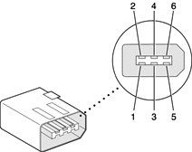

The FireWire connector has six contacts, as shown in Figure 3-2. The connector pin assignments are shown in Table 3-2.
Figure 3-2 FireWire connector
When the computer is on, the power pin provides a maximum voltage of 16.8 V (no load) and up to 7 W peak power. The power is shared with the USB ports, each of which can use up to 2.5 W. The power available for FireWire is reduced by the power consumed by the USB ports.
| Note: The maximum voltage on the FireWire power pin on the current iBook computer is higher than that of the previous model. |
Pin 2 of the 6-pin FireWire connector is ground for both power and the inner cable shield. If a 4-pin connector is used on the other end of the FireWire cable, its shell should be connected to the wire from pin 2.
The signal pairs are crossed in the cable itself so that pins 5 and 6 at one end of the cable connect with pins 3 and 4 at the other end. When transmitting, pins 3 and 4 carry data and pins 5 and 6 carry clock; when receiving, the reverse is true.